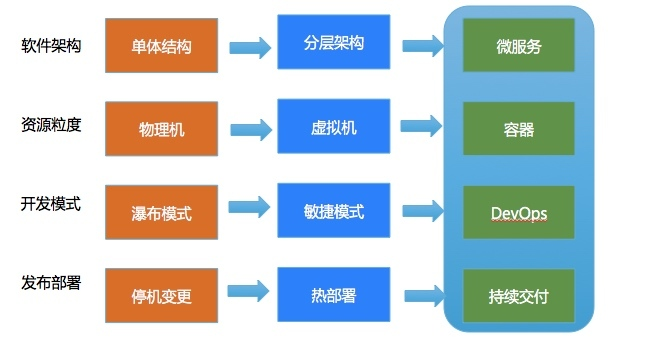

- 00 开篇词 带给你不一样的运维思考.md.html
- 01 为什么Netflix没有运维岗位？.md.html
- 02 微服务架构时代，运维体系建设为什么要以应用为核心？.md.html
- 03 标准化体系建设（上）：如何建立应用标准化体系和模型？.md.html
- 04 标准化体系建设（下）：如何建立基础架构标准化及服务化体系？.md.html
- 05 如何从生命周期的视角看待应用运维体系建设？.md.html
- 06 聊聊CMDB的前世今生.md.html
- 07 有了CMDB，为什么还需要应用配置管理？.md.html
- 08 如何在CMDB中落地应用的概念？.md.html
- 09 如何打造运维组织架构？.md.html
- 10 谷歌SRE运维模式解读.md.html
- 11 从谷歌CRE谈起，运维如何培养服务意识？.md.html
- 12 持续交付知易行难，想做成这事你要理解这几个关键点.md.html
- 13 持续交付的第一关键点：配置管理.md.html
- 14 如何做好持续交付中的多环境配置管理？.md.html
- 15 开发和测试争抢环境？是时候进行多环境建设了.md.html
- 16 线上环境建设，要扛得住真刀真枪的考验.md.html
- 17 人多力量大vs.两个披萨原则，聊聊持续交付中的流水线模式.md.html
- 18 持续交付流水线软件构建难吗？有哪些关键问题？.md.html
- 19 持续交付中流水线构建完成后就大功告成了吗？别忘了质量保障.md.html
- 20 做持续交付概念重要还是场景重要？看笨办法如何找到最佳方案.md.html
- 21 极端业务场景下，我们应该如何做好稳定性保障？.md.html
- 22 稳定性实践：容量规划之业务场景分析.md.html
- 23 稳定性实践：容量规划之压测系统建设.md.html
- 24 稳定性实践：限流降级.md.html
- 25 稳定性实践：开关和预案.md.html
- 26 稳定性实践：全链路跟踪系统，技术运营能力的体现.md.html
- 27 故障管理：谈谈我对故障的理解.md.html
- 28 故障管理：故障定级和定责.md.html
- 29 故障管理：鼓励做事，而不是处罚错误.md.html
- 30 故障管理：故障应急和故障复盘.md.html
- 31 唇亡齿寒，运维与安全.md.html
- 32 为什么蘑菇街会选择上云？是被动选择还是主动出击？.md.html
- 33 为什么混合云是未来云计算的主流形态？.md.html
- 35 以绝对优势立足：从CDN和云存储来聊聊云生态的崛起.md.html
- 36 量体裁衣方得最优解：聊聊页面静态化架构和二级CDN建设.md.html
- 37 云计算时代，我们所说的弹性伸缩，弹的到底是什么？.md.html
- 38 我是如何走上运维岗位的？.md.html
- 39 云计算和AI时代，运维应该如何做好转型？.md.html
- 40 运维需要懂产品和运营吗？.md.html
- 41 冷静下来想想，员工离职这事真能防得住吗？.md.html
- 42 树立个人品牌意识：从背景调查谈谈职业口碑的重要性.md.html
- 划重点：赵成的运维体系管理课精华（一）.md.html
- 划重点：赵成的运维体系管理课精华（三）.md.html
- 划重点：赵成的运维体系管理课精华（二）.md.html
- 新书 《进化：运维技术变革与实践探索》.md.html
- 特别放送 我的2019：收获，静静等待.md.html
- 结束语 学习的过程，多些耐心和脚踏实地.md.html
- 捐赠
33 为什么混合云是未来云计算的主流形态？
2018年1月22日凌晨，我们美丽联合集团旗下的蘑菇街和美丽说的业务，整体搬迁到腾讯云，完成了从托管IDC模式，到腾讯云上混合云模式的转变。
云计算发展到今天，无论是在技术、服务层面，还是在商业层面都已经相对比较成熟。当前绝大多数初创公司在基础设施上的策略一定是公有云，已经极少再有自建或托管IDC的情况，所以不会存在是否上云这样的纠结。
但是对于蘑菇街这样体量的公司，搬迁上云，就必须要考虑得更全面：考虑基础设施的变化，业务的平稳过度，运维模式的转变，成本管控的调整，以及众多的细节问题。
最近，有很多同行对我们为什么做这个选择比较感兴趣。因为尽管混合云模式是当下的大趋势，但真正面临抉择时，又总会被各种具体的细节问题所困扰，犹豫不决。
今天，我从蘑菇街的视角，结合真实情况，聊一聊我们为什么会做出上云这个选择。
我们所面临的问题
1.成本闲置问题
对于电商，大促已经常态化，除了“双11”“双12”以及“6·18”这样的例行大促，每个电商还会有自己的营销活动，比如我们就会有“3·21”春季促销，以及每个月不同的主题促销。这一点对于其它电商也是如此。
大促，从技术层面就意味着要在短时间内应对远远超过日常的峰值流量，可能是平时的十几倍，甚至是上百倍。为了支撑这么大的流量，就需要业务系统有足够的容量支持。
虽然我们会从技术和架构层面来提升容量，但是，无论如何优化，充足的硬件资源扩容是前提条件。
之前，我们在应对“双11”这样的大促时，只能采购更多的设备。与此同时，我们还要在机柜成本以及资源上下架等纯人工方面进行投入，这往往要花费几千万元的成本。
但是，每次大促峰值一过，这些设备基本就处于极低的负载状态。这批资源要经过将近一年时间，随着业务量快速增长才能逐步消化掉，然后再进入到下一轮大促的采购周期中。
所以，这部分成本投入的收益是非常低的，基本处于闲置状态。
2.基础设施维护问题
选择租用或托管IDC模式，随着业务量增长也会遇到一系列的问题。在我以往的实践操作中，我也遇到了以下几个问题，相信你也有过相似的困扰。
IDC机房的选址。在中国互联网八大节点所在城市的IDC资源无疑是最优的，但是这些地方的优质资源却也是最紧张的。通常会被国内各大互联网公司或云计算公司提前占据，所以很难找到相对独立且成规模的机柜区域，而零散的机柜分布对管理和维护工作来说十分不便。
退而求其次，就只能选择二级或三级节点，但是这样一来在网络质量上就降了一个或多个等级。同时，因为没有BGP线路，或者线路质量不高，就需要多线接入，这对业务体验以及管理维护都会带来很大影响。
IDC机房的扩展问题。一个机房内的机柜消耗完，想扩展就只能另找机房，但是属于同一运营商，或同一ISP服务商的同城机房资源是否充足，又是一个未知数。
不同机房间是否互联互通，以及是否增加跨地域的时延，对业务访问体验的影响很大。所以扩展性不足，会大大影响业务体验，甚至影响业务发展。
如果是通过第三方ISP接入的，特别是存在多个ISP服务商的时候，在互联互通时，服务商之间的沟通协调非常耗费精力，且不同机房以及多ISP之间的专线成本也会增加。当基础设施达到一定体量，这个问题会非常突出。
如果你也有过这方面的经历，相信你一定深有体会。
资源利用率问题。即使我们做了虚拟化，按照业界实际情况，CPU资源使用率一般也就在10%-15%左右。所以要想大幅提升使用率，就是要在离线的混部，也就是类似大数据消耗资源特别高的计算类业务上进行资源调配：比如，在凌晨调度到相对空闲的应用服务器上；而在白天，则将资源释放出来给业务应用。
但是，想要在离线混部技术上做文章，说起来容易做起来难，因为这在实际工作中是需要非常深厚的技术积累和非常高的技术门槛的。
业务层面的调度是一方面，另一方面，底层硬件、网络以及操作系统这些也需要相应的技术支持。这其中具体的复杂情况，你可以通过阿里最近在这方面的一些分享体会一下。
单考虑操作系统之上的应用和业务技术是无法满足要求的，所以，这就需要我们在进行技术规划时，在开始底层建设之前就要考虑全面。
我们知道，国内外超大型的互联网公司，以及各大云计算公司，在硬件选型上都有自己的定制化要求。其中一个重要原因，就是为了尽量保持几万甚至十几万硬件设备的系统架构一致，从底层硬件开始就为后续的超大规模运维做技术准备。
当然，这样的定制化需求，只有在需求量足够大的情况下才会被硬件厂商接受，一般如果只有百台或千台的规模，硬件厂商基本是不会考虑的。
所以这就会牵扯出下面这个问题。
3.底层技术投入和人才的问题
通常在互联网领域，越是底层的技术，技术门槛就越高、越复杂，也越离不开高端人才的投入。比如硬件资源虚拟化，就需要有懂内核、懂网络、懂OpenStack、懂分布式存储如Ceph等等的专业人才。
但是真正精通的人却不多，加上要搞定整套解决方案，还需要一个完整的团队，这就难上加难，在团队组建上面临更大的困难。
人才紧缺，就意味着人力成本会很高，这个就是技术投入的隐性成本。而且因为技术门槛高，一旦发生人员流动，那么，对于原有技术平台来说，无人能把控的风险就会更高。这一点往往会是最大的隐性管理成本所在。
当然，在人才招揽上，我们可以加大人力成本投入，招聘最优秀的人才。但是作为像蘑菇街和美丽说这样以更加聚焦于业务，以业务发展为生命线的公司，我们更期望能够在业务上取得创新和发展，而不是在技术上取得多么非凡的成就（这一点与公司的发展诉求是不一致的）。所以这就从根本上决定了，我们不会无限度地投入，或投入非常大的成本在这些基础技术的研究上。
对于以技术创业为主的公司，其考量的出发点就完全不同了，这里我们不展开讨论。
进一步讲，论体量和规模，我们自有的底层技术无论如何是无法与专业的云计算公司相比的，这就带来另一个问题：如何为这些优秀人才提供成长和发展？因为既然在体量和规模上比不过，那我们能够提供的个人成长空间和机会，一定也比不过专业云计算公司。这种情况下，大部分人才的去向选择就显而易见了。
对于大数据，分布式中间件等岗位，也会存在类似的情况，因为它们大多需要体量和规模才能体现技术挑战性和成长空间。
4.小结
到这里我们做个小结，随着基础设施体量越来越大，我们在基础设施和平台服务层面，将会投入越来越大的财力、人力和最宝贵的精力。
但是这项投入的收益和成效却不明显，且在这个层面的专业性上，我们与云计算平台之间的差距越来越大，脱节也越来越严重。
我们的决策过程就是，以未来3-5年，甚至更长远的视角考量，我们认为上述这些问题一定会成为我们将来业务发展的障碍，因此上云就成了我们的不二选择，并成为公司的战略决策之一。
纵观技术发展趋势
1.从软件架构发展的趋势上看，从最早期的物理机，到目前主流的虚拟机，再到当前非常火热的Docker，以及可能在未来会成为又一主流的Serverless，我们对于资源层面的依赖越来越少，而这个趋势恰恰是云计算不断发展带来的改变。

同时，像Serverless这样的技术理念，就是在公有云平台上，为了提升资源利用率，而衍生出来的。而且从目前看，Serverless也只有在公有云平台上才有意义。在私有云，或者是自建或托管IDC中，因为资源规模问题，没有看到太多的实践价值。
2017年AWS re:Invent 2017峰会上，AWS共发布了在数据库、容器、人工智能、物联网以及网络等等方面的几十项新的产品技术服务。可以说，如果想要技术为业务带来更多的可能性，拥抱云计算是最好的选择。
2.人工智能对云计算能力的释放。我们当前的人工智能主要是对机器学习算法的广泛应用，这里的两个前提条件，一个是要有足够大的数据量，另一个就是要有足够充足的计算资源。
我们先看一个2017年的新闻：
2017年5月份，谷歌宣布麻省理工学院的数学教授安德鲁·V·萨瑟兰使用抢占式虚拟机实例，在220000个GCE核心上运行了庞大的数学工作负载。据称这是迄今为止在公共云上运行的最庞大的高性能计算集群。
计算任务阶段性的运行对资源需求是非常庞大的，一般企业很难提前预留足够的资源来做这个事情，这时云的资源优势和弹性能力就凸显出来了。
可以说，未来人工智能的发展和应用，必然会依托于云计算。
没有银弹
软件工程中，我们一直在讲，没有银弹。前面我们介绍了我们遇到的一些具体问题，以及云计算的优势所在，但是没有银弹这条规律，仍然也适用于云计算行业。
那么，是不是有了云计算，有了公有云，上述我们所说的问题就都不存在了呢？
以公有云为例，它也一样会遇到IDC建设、扩展性以及基础技术投入等等问题，可能也会给我们带来一定的影响。但是对于公有云来说，因为自身财力和人力的优势，面对这样的问题会更容易解决一些，但对于我们可能就是难以逾越的难题了。
同时，公有云虽然解决了很多问题，但是，就目前这个阶段来讲，如果想要获得较高的客户满意度，仍然有很长的路要走，比如不同形态业务的差异化支持和服务问题。
我想，这一点并不是云计算厂商不想做好，因为无论在技术、产品以及服务上，它们并不是一蹴而就的，而是各方面都需要一个逐步积累、磨合和摸索的过程，这就需要云计算厂商与业务客户共同努力，朝着同一个目标前进，需要彼此多一些耐心。
我们也期望在国内见到AWS和Netflix这样的最佳组合，相互成就，共同成功。
欢迎你留言与我讨论。
如果今天的内容对你有帮助，也欢迎你分享给身边的朋友，我们下期见！
© 2019 - 2023 Liangliang Lee. Powered by gin and hexo-theme-book.